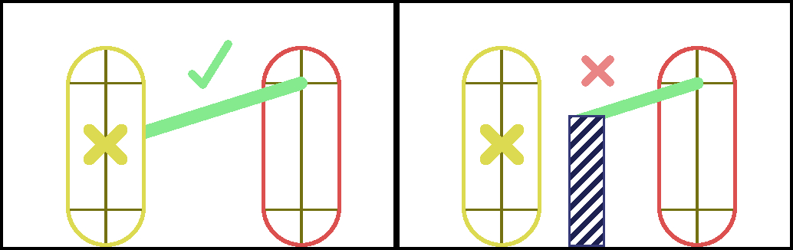
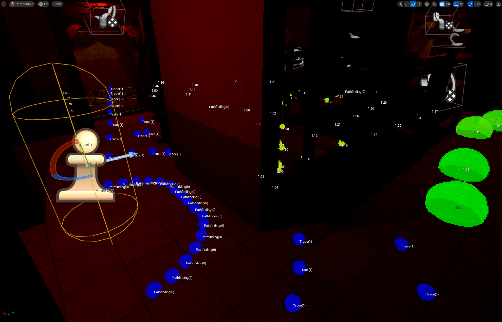
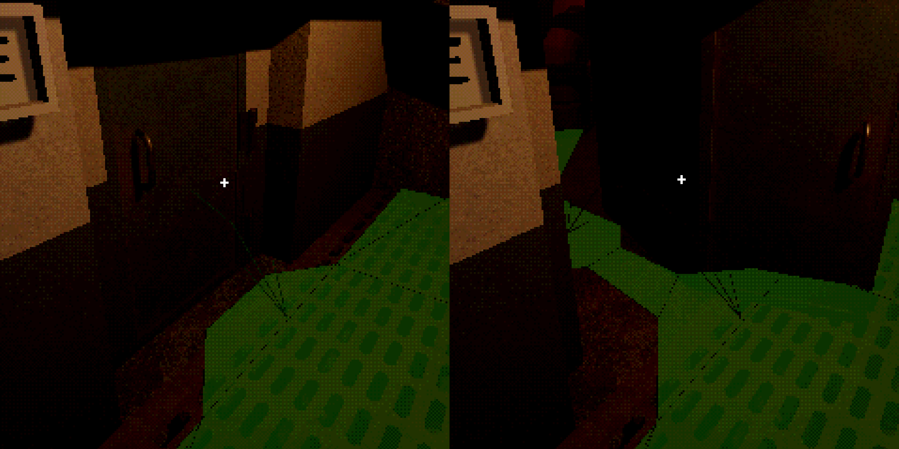
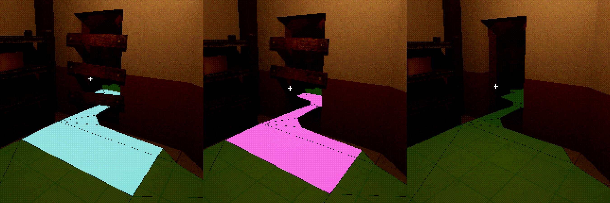

Unreal Engine Five - AI Development
Key points in feature development:
- AI Perception Improvement (code)
- Environment Query System Usage
- AI Navigation Foundations
- AI - Door Interaction
- AI - Door Improvements
- Dynamic Obstacle-Navmesh Effects
- Player Light-Visibility Testing
Mechanic - AI-Environment Reactivity:
AI Perception Improvement:
The first step was to improve the way Unreal's perception system detects the player by sight.
The default method raycasts towards the center of the player, producing unwanted results:

To fix this, the CanBeSeenFrom interface was rewritten for the player character, to introduce a second raycast against the position of the camera, the best representation of the head:
OutSightStrength = 1;
FHitResult HitResult;
FVector SightTargetLocation = GetCapsuleComponent()->GetComponentLocation();
const FCollisionQueryParams CollisionQueryParams = FCollisionQueryParams(FName(TEXT("CharacterLOSTest")), false, IgnoreActor);
const UWorld* World = GetWorld();
World->LineTraceSingleByChannel(HitResult, ObserverLocation, SightTargetLocation, ECC_Visibility, CollisionQueryParams);
if (HitResult.GetActor() == this)
{
OutSeenLocation = SightTargetLocation;
NumberOfLoSChecksPerformed = 1;
return true;
}
SightTargetLocation = GetFirstPersonCameraComponent()->GetComponentLocation();
NumberOfLoSChecksPerformed = 2;
World->LineTraceSingleByChannel(HitResult, ObserverLocation, SightTargetLocation, ECC_Visibility, CollisionQueryParams);
if (HitResult.GetActor() == this)
{
OutSeenLocation = SightTargetLocation;
return true;
}
OutSightStrength = 0;
return false;
I kept the capsule-centre raycast, but no further checks were added for sake of performance.
The code was optimised as much as was possible due to its potential continuous use, and including two raycasts.
This has proven suitable for my needs in testing, though may be revisited in future.
Environment Query System Usage:

As I developed AI behaviour, I needed a "search" state that the AI would switch to after losing sight of the player, or as it investigates the source of a noise.
After some research, I began using the Environment Query System as the basis of this.
In a cone forwards from the AI, locations are judged on their distance and visibility to prioritise accessible blind spots.
This is used to find and move towards a search location, this process is repeated several times unless interrupted by new stimuli.
Some test cases gave no blind spots in a direction, so I expanded this to make the AI rotate and repeat this in a new direction if no suitable spots are found.
This has proven suitable in testing, and I am experimenting with further uses of the EQS to react to level layout and to "tether" the AI to the player so that it never strays too far away by chance.
AI Navigation Foundations:
As I worked on AI navigation, I first settled on some key design principles:
For sake of performance, the navmesh would update in real-time from earmarked actors only.
These earmarked actors would affect the navmesh through navmesh modifiers to provide maximum control over their effects.
These objects would not collide with the AI, instead relying on their navmesh modifiers to limit movement.
This was done to avoid collision mishaps with moving parts.
AI - Door Interaction:

Doors were made with the player interaction system, for mouse/cursor based control.
Adding proper AI-interaction with this system presented an interesting challenge to solve.
I added a nav-link to doors, by which the AI recognises a passage between the navmesh either side of the doorway.
Crossing the link would apply an impulse to the interaction component, propelling it into an open position.
To avoid mishaps, the door was made immune to player input whilst moving, and would not bounce back from its limit despite the speed.
This was a huge improvement, albeit this process would take place even for an open door.
Using the interaction component's open/close delegates, I alternated between the navlink and a navmodifier that allows ordinary movement through the doorway.
After some fine-tuning, this made a great solution to believable AI-door interaction.
It even improved gameplay through the risk/reward of a player stopping to try to close doors behind them in order to slow down a pursuing monster.
AI - Door Improvements:

As I continued testing, I found a problem in my entirely navmesh-driven approach to doors;
NPCs would happily pass through the mesh of an open door as they walk past the doorway.
An extra nav modifier was attached to the door mesh, with an increased navigation cost that encourages the AI to pass around them.
The AI could still pass through doors if absolutely necessary, avoiding any cases of becoming trapped due to unfortunate door movement.
I also took this opportunity to add in more means of locking/unlocking doors, such as physical latches and the ability for NPCs to force a door open, rendering the lock inoperable in the process.
Dynamic Obstacle-Navmesh Effects:

Designing AI-obstacles was mainly about applying what doors had taught me and experimenting with Navigation Query Filters.
The first of these was barricades blocking passages, such as nailed boards across a doorway.
I used a navmodifier whose "area class" changes as the barrier is dismantled, becoming ordinary navmesh when fully destroyed.
Instead of overriding default navigation cost, the area classes use costs of entry so the act of crossing the barrier applies cost.
I used Navigation Query Filters for the AI to react to obstacles differently based on AI-state.
NPCs would avoid obstacles when roaming, but happily break them to investigate noises, with only full obstacles applying some extra navigation cost.
Hostile NPCs would ignore barriers entirely, prioritising the most direct path to the player.
Player Light-Visibility Testing:
To factor lighting into stealth, I added a way to check the player's light exposure.
A collision volume on the player uses overlap with light sources to add and remove them from the list of lights to test.
Each light type gets its own implementation of a Blueprint Interface to determine the extent it effects the player, and how.
This was done so that light sources made in the editor - based on my C++ classes - can be set up by somebody without coding experience without issue.
Lights add to a "light detection value" of the player each tick, which is matched against a curve by the AI Controller.
This provides the multiplier to the detection of the player, changing the time taken to recognise the player when they are visible.
The use of a curve mapping the player illumination to detection time has allowed for easy adjustment in testing, and allows for more control than a basic linear interpolation.
For an overview of key UE5 features developed, click here. To see all development summaries, click here.